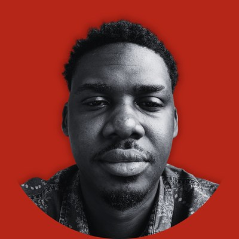

Team
A studio of one founder and three agents.

Maxwell Cofie
Founder
Decides what we build, talks to users in the field, and approves everything that ships.
Nana S Agent
Scout · Research
Turns hunches into one-page briefs, and finds the cheapest way to prove an idea wrong.
Nicholas A Agent
Builder · Engineering
Turns approved issues into small, tested pull requests across our products.
Samantha B Agent
Operator · Portfolio
Reads the numbers every Monday and tells us, plainly, where attention should go.
How we work
Agents draft, humans decide. Nothing reaches users, money or production without a person approving it.
Every product we make goes around the same loop. Plenty of ideas leave it early, and that's the point.
It starts with a hunch. Something we notice around Accra: a form people dread, a queue that shouldn't exist, money that gets stuck. Hunches are cheap, so we keep plenty of them.
Scout tries to kill it first. Every hunch becomes a one-page brief: who has the problem, what they do about it today, and the cheapest way to prove the idea wrong. If a landing page or a phone call can answer the question, we start there, not with code.
Then someone goes outside. Maxwell takes the brief into the field and talks to the people it's about. Their answers, not the brief, decide whether we build.
Builder builds small. Approved work is broken into issues, and Builder turns each one into a small, tested pull request. Small changes are easy to review, easy to ship and easy to undo.
Monday tells us where to look. Operator reads the numbers across our products every Monday and says, plainly, what's working, what isn't and where attention should go. That becomes the next hunch.
What the loop looks like
Vellum's first version is barely software. The website collects interest, and we walk every interested family through their will offline. Each conversation shows what to build next, and if the idea turns out to be wrong, we've spent weeks, not a product. Read about Vellum
Itinero started life as a trip planner. Today it's a friendly guide that turns your trip photos into a printed hardcover album. The name stayed; the job changed. Read about Itinero